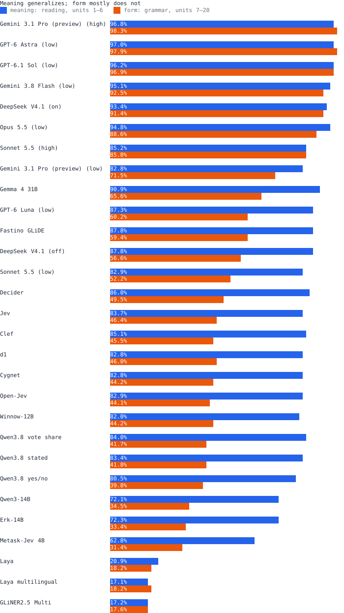
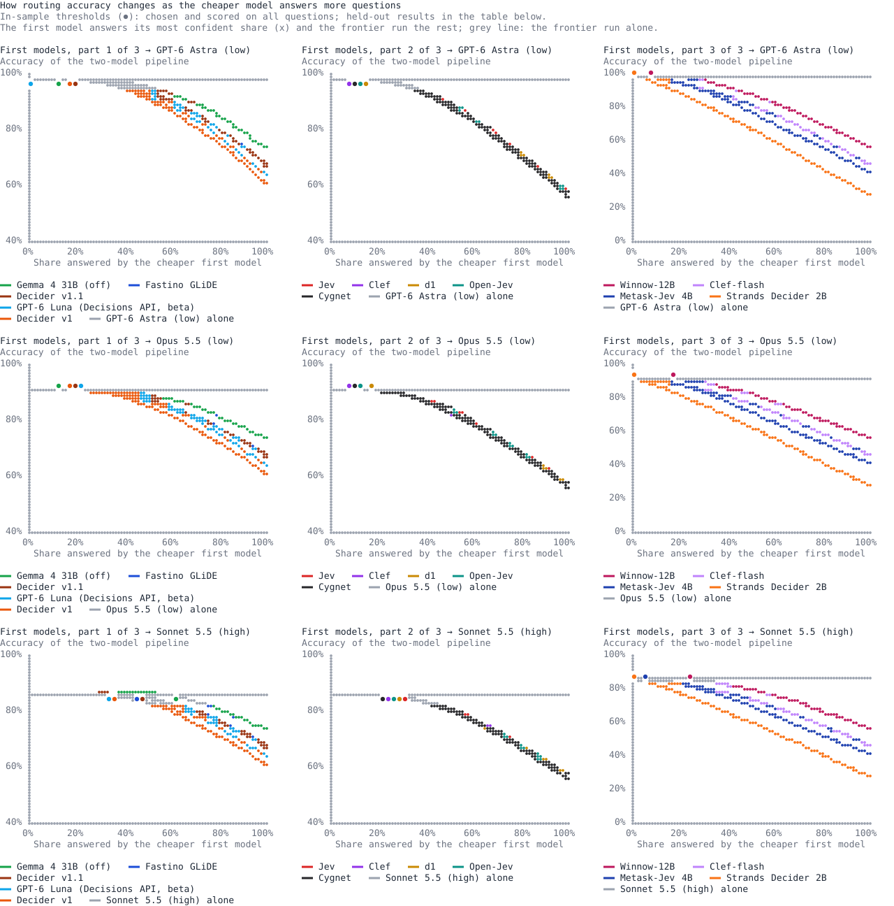
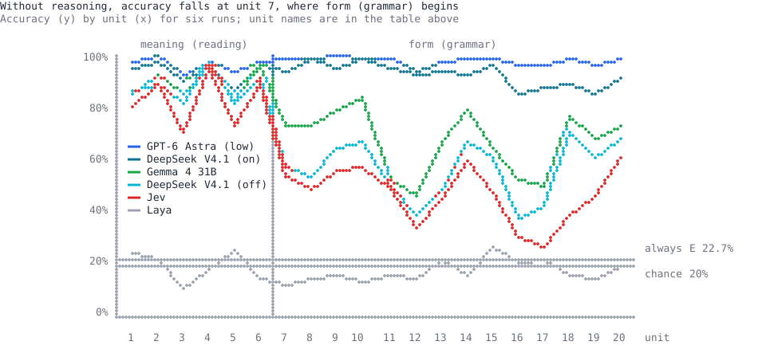
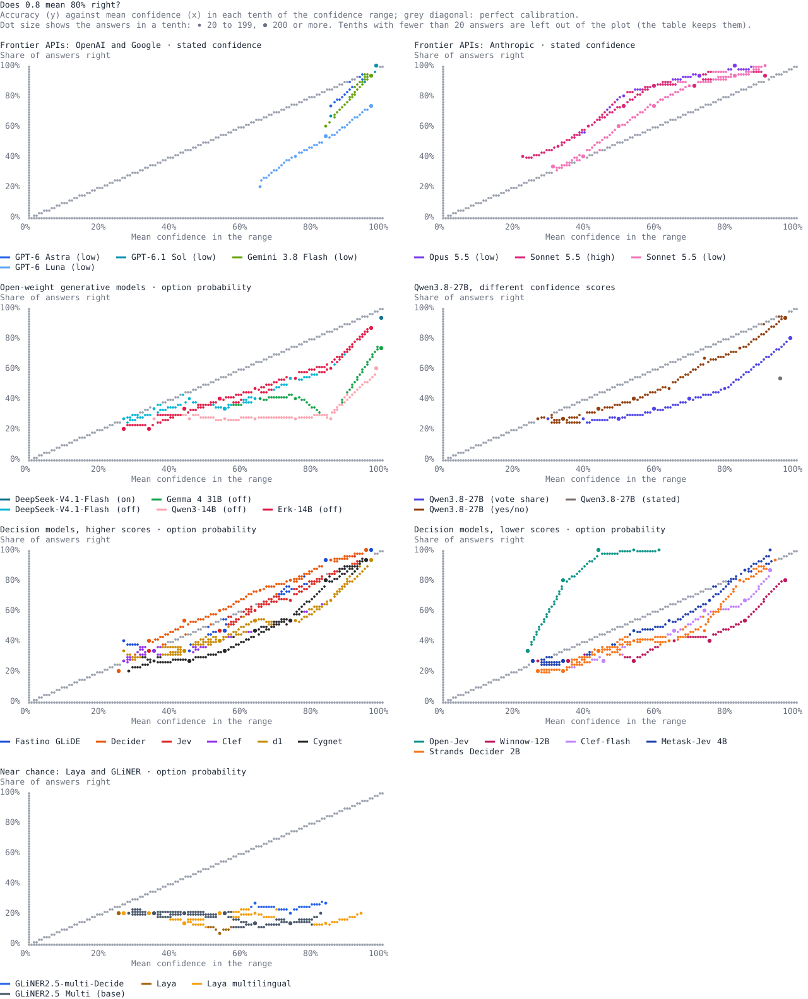
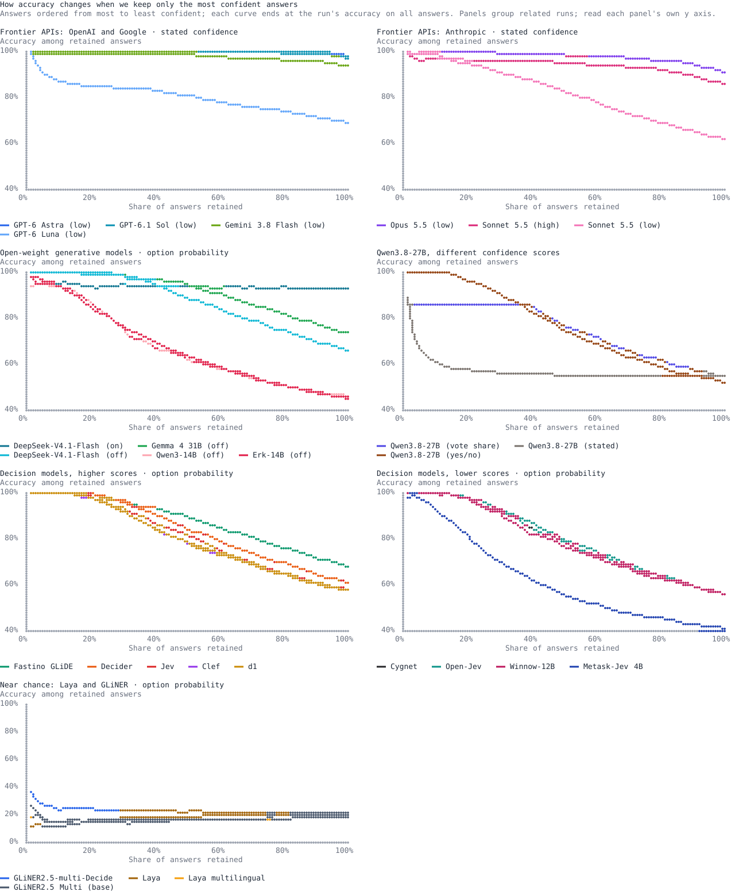
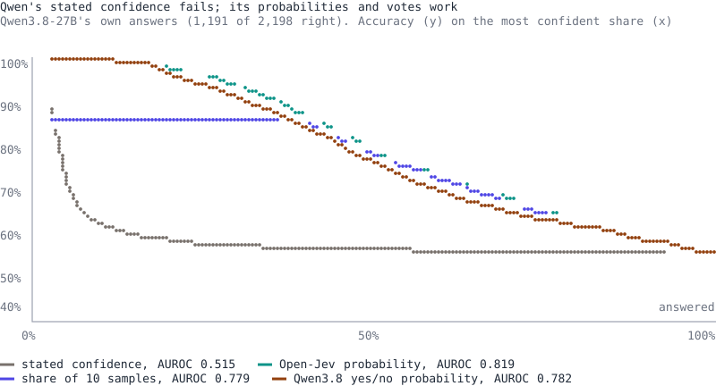
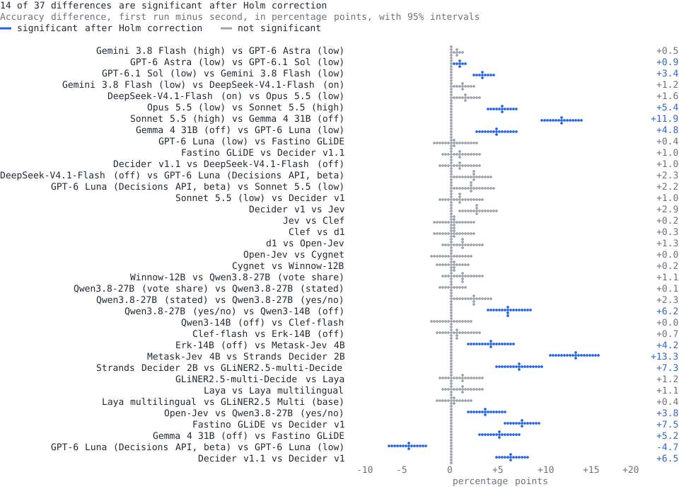

What this benchmark measures
This benchmark asks what happens when AI models leave the territory they were trained on. Turkish is the test bed, not the topic. Most models probably see far less Turkish than English in training. We cannot check this, because the training data of most models is not public. So the "thin training" in the title is an assumption, and the page treats it as one.
We measure four things:
- Meaning: reading questions ask what a word, a sentence or a paragraph says (units 1–6, 656 questions).
- Form: grammar questions ask how words are built and how a sentence is put together (units 7–20, 1,542 questions). Turkish builds words from chains of suffixes, so these questions need analysis that English patterns do not supply.
- Knowing when it is right: whether the confidence that comes with an answer goes up when the answer is right. A model that knows this can answer the questions it is sure of and pass the rest to a person or a larger model.
- Cost: how many output tokens, how much reasoning, how much money and how much time a run needs for its answers.
Why confidence matters. A confidence score tells a system which answers it can trust. Of Jev's answers at a confidence of 0.9 or more, 95% were right (509 of 534); of its answers below 0.5, only 31% were right (275 of 877). With a reliable confidence, a cheap model can keep the answers it is sure of, a person can check only the doubtful ones, and a drop in confidence marks unfamiliar territory.
The questions come from a practice book for the Turkish-language section of the Basic Proficiency Test (TYT Türkçe), the first stage of Turkey's university entrance exam. Every question has a printed answer key, so no model grades another. The bank is 70% grammar, so the total score weights form more than meaning. The leaderboard shows both parts.
The question of knowing when it is right comes from decision models, which return a probability for every option instead of writing an answer: TypeSafe's Jev, Perplexity's Decider, Liquid AI's d1 and the open Laya models. Jev's weights and training are private. Open-Jev is an independent, open implementation inspired by it, so we can see how its probabilities are made and test the parts separately.
Key findings
- Meaning carries over; form does not. Every model except the near-chance Laya models answers 80–97% of the reading questions correctly. On the grammar questions, GPT-6 Astra, DeepSeek-V4.1-Flash with reasoning and Claude Sonnet 5.5 at high effort stay at their reading level. Claude Opus 5.5 at low effort loses 6 points, and every other model except Laya loses 23–42 points.
- Reasoning recovers form, but it costs tokens and time. With reasoning on, DeepSeek-V4.1-Flash goes from 56% to 92% on the grammar questions. It writes about 1,000 output tokens per question instead of 6, and its run takes 123 minutes instead of 11. GPT-6 Astra reaches 98% on grammar with 21 output tokens per question.
- Strong models know when they are right; a small model knows it only through its probabilities. GPT-6 Astra's stated confidence separates its right answers from its wrong answers best: its AUROC, the chance that a right answer gets a higher confidence than a wrong one, is 0.92. On the same answers, Qwen3.8-27B's stated confidence does no better than chance (0.51). Its yes/no probabilities (0.78) and the share of 10 samples that agree (0.78) work.
- The order of the confidence carries over; its size does not. Open-Jev still ranks right answers above wrong ones (AUROC 0.82). But its confidence is too low: all 144 of its answers at a confidence of 0.5–0.6 were right.
- Knowing when it is right saves money. The rule is simple: a cheap decision model answers first; when its confidence is high, its answer stands; when it is not, the question goes to a frontier model. A decision model costs 2% or less of a frontier model per question. Run as a real pipeline in front of GPT-6 Astra, Perplexity's Decider answered 18% of the questions and cut the cost by 17%. Accuracy changed by −0.4 points (95% interval −0.8 to +0.1), inside the 0.5-point tolerance set before the run. In simulation, Jev in front of GPT-6 Astra kept 15% of the questions at a loss of 0.1 points, with the threshold chosen on other questions.
- Is it memory? Two checks found no clear sign. On the 40 Turkish-language questions of the June 2026 exam, which no book prints, each model scored close to what its book score predicts once meaning and form are weighted like the exam paper, within the ±12-point uncertainty that 40 questions allow. When the correct option's text was replaced by a copy of a wrong option, GPT-6 Astra picked the original letter about as often as the copied option (31.0% and 28.4%, on the questions whose options are text). A model that remembered answer letters would pick the original letter far more often. Both checks have limits, listed under Caveats.
Leaderboard: accuracy, confidence and cost
Each row is one run. Score: the share of all questions answered correctly. Meaning: the reading units (1–6). Form: the grammar units (7–20). TYT mix: meaning and form weighted like the 2026 TYT paper (33 reading and 7 grammar questions). AUROC: how well the run's confidence separates right from wrong answers; empty when the run gives no confidence. Output tokens: per question, reasoning included. Cost: API-equivalent US dollars per 1,000 questions. "The setups" under Method explains each run. Click a column heading to sort.

Knowing when it is right saves money: confident answers stay, the rest go to a frontier model
Question → decision model (Jev, Perplexity's Decider, d1 or Open-Jev) → confident? Yes: its answer stands. No: the frontier model (GPT-6 Astra or Claude Sonnet 5.5) answers.
The rule is simple. A cheap decision model answers first. When its confidence reaches a threshold, its answer stands. When it does not, the question goes to the frontier model. A decision model costs 2% or less of a frontier model per question, so every question it keeps saves money. The risk is a confident wrong answer, and the threshold controls that risk: a higher threshold keeps fewer questions and makes fewer mistakes. A decision model answers the questions where its probability for the chosen option reaches a threshold, and passes the rest to a frontier run. Answered: the share it answers at the lowest threshold that keeps the frontier run's accuracy, chosen and scored on all questions. Held out: the threshold is chosen on a random half of the questions and scored on the other half, over 300 splits that keep questions sharing a passage together: the mean share answered, the mean accuracy difference from the frontier run alone in percentage points, and the share of splits where the cascade did worse. Cost: API-equivalent, the decision model's run plus the frontier run on the questions passed on. Held out is not a deployment test: a real pipeline sends the remaining questions in new batches, which The cascade run for real below does.

The cascade run for real
This test checks whether the saving holds in a real pipeline. It does for cost: with Perplexity's Decider in front of GPT-6 Astra, the cost fell by 17%. It does not for time: the pipeline spent 19 minutes in requests against 17 for GPT-6 Astra alone, because the Decider answers one question per request. The table above simulates the cascade with stored runs. Here it ran: the questions were split into two halves, keeping questions that share a passage together, and the threshold was fixed on one half before any run. On the other half, Perplexity's Decider answered the questions at or above the threshold, from its stored run, and a new frontier run answered the rest in batches of 16 of their own. The same frontier setup also ran on every held-out question, at the same time, for comparison. Tolerance: the accuracy loss accepted before the runs.
Does a decision model's doubt point at frontier mistakes?
Doubt is the entropy of the decision model's option probabilities: 0 when one option has all the probability, and highest when all options are equally likely. Spearman: its rank correlation with how many of GPT-6 Astra (low), Claude Opus 5.5 (low) and Claude Sonnet 5.5 (high) got the question wrong. p: 200 shuffles within each unit, so a link that only separates easy units from hard ones fails. Most uncertain tenth: how many of the questions some frontier run got wrong fall in the decision model's most uncertain 10%.
Cost: tokens, reasoning, money and time
A right answer costs tokens, and reasoning multiplies them. This section shows what each run spent and what reasoning bought.
Billed: what a pay-per-token API charged for the run. API-equivalent: the run's tokens at a list price or an assumed price, so that runs can be compared. The Claude and GPT runs used flat subscriptions, so their figures are list prices for the same tokens. Open-Jev is priced at Jev's rate and Qwen at an assumed rate, although both ran on our GPUs. Local GPU: the hardware and precision of the self-hosted runs. Request time: minutes spent in requests.
What reasoning buys
Two models ran with less and with more reasoning. More reasoning raised accuracy on form (grammar) by 33–36 points. It also multiplied the output tokens per question by 9 for Sonnet and by about 160 for DeepSeek, and the request time by about 6 and 11.
| Model | Reasoning | Score | Form (grammar) | Output tokens per question | Cost per 1,000 questions | Request time |
|---|---|---|---|---|---|---|
| Claude Sonnet 5.5 | low | 61.4% | 52.2% | 22 | $1.32 | 10 min |
| Claude Sonnet 5.5 | high | 85.0% | 85.0% | 199 | $3.09 | 58 min |
| DeepSeek-V4.1-Flash | off | 65.7% | 56.0% | 6 | local GPUs | 11 min |
| DeepSeek-V4.1-Flash | on | 92.4% | 91.6% | 1,002 | local GPUs | 123 min, 8 requests at a time |
For comparison, GPT-6 Astra at its lowest reasoning effort answers 97.6% of the questions correctly with 21 output tokens per question, at $5.38 per 1,000 questions. A stronger model can beat more reasoning.
Price basis
Accuracy by unit: meaning and form
The share of each unit's questions answered correctly. Units 1–6 test meaning (reading); units 7–20 test form (grammar). Each unit's English name comes first and its Turkish name second. Hover a cell for the count. Guessing scores 20%; always answering E, the key's most common letter, scores 22.7%.

Knowing when it is right: confidence and accuracy
How we read confidence
We look at the confidence score of every answer, not only at whether the answer is right. The question is: when the confidence goes up, does the chance of a right answer go up too? We ask this for every run that gives a confidence, 13 of the 16 runs. Gemma 4 31B and both DeepSeek-V4.1-Flash runs give only an answer, so they have no confidence to test.
A confidence comes from one of three sources. Some models state it as a number from 0 to 1. The decision models and Qwen's yes/no scoring give a probability for every option. Qwen's vote-share run samples 10 answers and uses the share of samples that agree.
We measure the link between confidence and correctness with AUROC. AUROC is the chance that a right answer gets a higher confidence than a wrong answer: 0.5 means no link, and 1.0 means that every right answer has a higher confidence than every wrong answer. We do not use the ordinary correlation coefficient (Pearson's r), because r also depends on how often a model is right. For example, GPT-6 Astra is right on 97.6% of the questions. Its r is only 0.43, although its AUROC of 0.92 is the highest on this page. Perplexity's Decider has a higher r (0.56) but a lower AUROC (0.83).
Calibration checks a second property: whether the size of the confidence matches the accuracy. Of the answers given at a confidence of 0.8, about 80% should be right. ECE (expected calibration error) is the average gap between confidence and accuracy; 0 is perfect.
A confidence is useful only if higher confidence means more right answers. This table shows the accuracy of the answers in each confidence range, with the number of answers in parentheses. A range includes its lower bound; the last range also includes 1.00. Runs without a confidence are not listed.

How well confidence separates right from wrong answers
AUROC: the chance that a right answer gets a higher confidence than a wrong answer; 0.5 is chance and 1.0 is perfect. ECE (expected calibration error): the average gap between confidence and accuracy, over 10 equal-width ranges; 0 is perfect. Top 20%, 50%, 80%: the accuracy if the run answered only that share of the questions, the ones with the highest confidence. Equal confidences count as ties, which matters for the vote share: it takes only 10 values. Small numbers: 95% bootstrap intervals.

How far to trust a confidence of 0.99
How many answers each run gave at a probability or stated confidence of 0.99 or more, how many of them were right, and the 95% Wilson interval on that accuracy. A few answers cannot show an accuracy of 99%. For example, 21 right answers out of 21 show only that the accuracy is between 84.5% and 100%.
Same answers, four confidence sources
The runs above each score their own answers, so a comparison between them also compares different answers. Here one set of answers is scored by four confidence sources: The four sources are Qwen's stated confidence, the share of its 10 samples that chose the answer, Qwen's yes/no probability and Open-Jev's probability. Only the confidence source changes.

What carries over when training is thin
This card sorts the key findings by ability and gives the evidence for each. Some abilities carry over to a setting that a model's training did not focus on, and some do not.
| Ability | Carries over? | Evidence |
|---|---|---|
| Understanding meaning | Yes | Every model except the near-chance Laya models answers 80–97% of the reading questions correctly. |
| Knowledge of form | Only in the strongest models | GPT-6 Astra answers 98% of the grammar questions correctly. Gemma 4 31B answers 90% of the reading questions but 67% of the grammar questions. |
| Reasoning in place of training | Yes, at a cost | With reasoning on, DeepSeek-V4.1-Flash goes from 56% to 92% on the grammar questions; it writes about 1,000 output tokens per question instead of 6. Claude Sonnet 5.5 goes from 52% to 85% between low and high effort, with 199 output tokens per question instead of 22. |
| Order of the confidence (AUROC) | Mostly for meaning; less for form | Jev's AUROC is 0.89 on the reading questions and 0.72 on the grammar questions. Arize measured 0.95 to 0.99 for Jev, depending on the request format, on English tasks with two labels; those tasks differ from these questions. |
| Size of the confidence (calibration) | No | Open-Jev divides its scores by a temperature of 2.53, fitted on its training data. On these questions the best temperature is 0.68. |
Why form does not carry over. A grammar question asks about Turkish form, for example which suffix turns a verb into a noun. A model can answer it only if the model learned that form. A meaning question depends less on this. A likely reason is that a model can find the main idea of a paragraph with skills that it also learned in other languages.
Why the order carries over but the size does not. The temperature changes how spread out the probabilities are, but it does not change their order. With the temperature fitted on its training data, Open-Jev's confidence is too low: all 144 of its answers at a confidence of 0.5–0.6 were right, and it never gives a confidence of 0.7 or more. But Open-Jev still puts right answers above wrong ones. Refitted on its answers to the first version of the question bank, the temperature cut the ECE from 0.228 to 0.030, and the AUROC stayed the same (0.8193 before, 0.8191 after).
Two limits. First, we do not know how much Turkish each model saw in training, so "thin training" is an assumption. The book is also online, so some questions may have been in training (see Caveats). Second, Turkish is one setting. A claim about unfamiliar settings in general needs a second test in a different setting.
Run-to-run variation: same question, same answer?
A confidence is worth little if the answer changes when the same question is asked again. Each setup run several times on the same questions. The one-question setups ran 5 times on the whole bank, their first run being the one above; the 16-question setups ran 5 times on one fixed sample of 200 questions, with the same batches every time. Changed answer: questions on which the runs did not all choose the same option. Same mistake every run: questions every run got wrong with the same option, of those any run got wrong; another run would not reveal these. Score spread: the median, over the questions, of the largest minus the smallest score of the chosen options. Wrong at ≥ 0.99: each run's count, and the questions wrong at that score in every run.
Paired comparisons: which gaps are real?
Each run against the next one by score, plus Open-Jev against Qwen's yes/no scoring and Perplexity's Decider against Jev, over the same questions. The interval and the exact McNemar test rest on the questions only one of the two got right. Differences are in percentage points. Holm p corrects for testing all the comparisons in the table; greyed values are not significant at 0.05.

More findings
- Ranking. GPT-6 Astra at its lowest reasoning effort has the highest score, 97.6%. DeepSeek-V4.1-Flash with reasoning (92.4%), Claude Opus 5.5 at low effort (90.4%) and Claude Sonnet 5.5 at high effort (85.0%) follow.
- A borderline lead. DeepSeek-V4.1-Flash with reasoning leads Claude Opus 5.5 at low effort by 1.9 points. For this comparison alone p = 0.006, but after the Holm correction for all 16 comparisons p = 0.050. The corrected p has crossed 0.05 twice as the data changed. On the 200-question sample of the repeats, averaged over five runs each, the two score about the same (94.9% and 95.5%).
- Open-weight models without reasoning. Gemma 4 31B is the strongest (73.9%). DeepSeek-V4.1-Flash trails it by 8 points, mostly in the units on parts of speech, noun phrases, verbals and sentence elements.
- The question mix changes the ranking. The bank is 70% grammar; the 2026 TYT paper was 18% grammar. Weighted like that paper (the TYT mix column), Gemma 4 31B passes Claude Sonnet 5.5 at high effort, Perplexity's Decider passes Sonnet at low effort, and Opus edges past DeepSeek with reasoning.
- Decision models. Perplexity's Decider, Jev, d1 and Open-Jev answer 56–60% of the questions correctly, and the Laya models 18–19%. The first four flag their own mistakes well: AUROC 0.79–0.83, each with a 95% interval of about ±0.02.
- Answers at 0.99 or more. They are rare and almost always right, but the evidence differs by model. Jev was right on 311 of 312 such answers and d1 on 273 of 274 (95% intervals from about 98%). The Decider's 21 of 21 are too few to show 99% accuracy (95% interval 84.5–100%). Open-Jev never reaches 0.99. These answers cover 1–14% of the questions.
- The cascade in simulation. With stored runs, a decision model can take 11–36% of the questions without lowering the frontier model's accuracy. With the threshold chosen on other questions, accuracy drops by 0.1–0.2 points. Run for real, the pipeline saved no request time, because the Decider answers one question per request. A decision model's doubt points only weakly at the questions that the frontier models get wrong.
- Votes. Answering with the majority of Qwen's 10 samples did not raise accuracy (54.3% against 54.2%). When all 10 samples agreed, as on 40% of the questions, the answer was right only 85% of the time.
- Same question, same answer? Over 5 runs, Gemma 4 31B, Open-Jev and Perplexity's Decider gave the same answers (the Decider changed 2 of 2,198). On a 200-question sample, GPT-6 Astra changed 1 answer, DeepSeek-V4.1-Flash 12 without reasoning (although it decodes greedily) and 15 with reasoning, Claude Opus 5.5 (low) 20 and Sonnet 5.5 (high) 31. On the whole bank, Jev changed 14% of its answers, d1 10% and Qwen's yes/no scoring 7%. Most mistakes of the Claude models and DeepSeek did not recur in every run; most mistakes of the decision models did.
- Repairing the question bank raised every setup that ran on both versions, except the Laya models, by 11–30 points on the repaired questions.
Method
The setups
| Runs | Why they are here |
|---|---|
| Jev 1.13.0 | The hosted decision model that inspired Open-Jev, through TypeSafe's API. |
| Perplexity Decider 27B, Liquid d1 | Two more hosted decision models: Perplexity's
pplx-decider-v1-27b through its Decisions API, and Liquid AI's d1 through its free
tier. |
| Laya, Laya multilingual | Open-weight decision models, self-hosted: an encoder with a decision head that scores every option in one pass. |
| Open-Jev 27B v1.1 | The open decision model as released, self-hosted. |
| Qwen3.8-27B, yes/no scoring | Open-Jev without its trained parts: the same base model and prompts, scored by the Yes-minus-No logit at temperature 1, with the same probability formula. The gap to Open-Jev is what the adapter, head and temperature add. Temperature never changes which option wins, so the accuracy comparison is exact. |
| Qwen3.8-27B, stated confidence | The same base model used the ordinary way: it picks an option and states a 0–1 confidence. This shows whether the model's own words give a confidence as useful as its token probabilities. |
| Qwen3.8-27B, vote share | The same request as the stated-confidence run, sampled 10 times; the answer is the most frequent letter and the confidence the share of samples that chose it. This shows whether sampling a model repeatedly, without reading its probabilities, flags mistakes as well. |
| GPT-6 Astra, Claude Opus 5.5, Claude Sonnet 5.5 | Frontier models that also state a confidence: an upper reference for accuracy, and a test of how well a strong model's stated confidence tracks its accuracy. Sonnet ran at low and at high effort. |
| Gemma 4 31B, DeepSeek-V4.1-Flash | Self-hosted open-weight models that only answer: reference points for accuracy. DeepSeek ran with reasoning off and on, which shows what reasoning adds. |
How Open-Jev works
Open-Jev 27B v1.1 is Qwen3.8-27B, left unchanged, plus three small trained parts: a LoRA adapter (15.5 million weights, 0.06% of the model), a one-layer scoring head and a single calibration temperature. It never generates text. For a question with K options (five in the TYT), it:
- writes one prompt per option: the question, that option as the proposed answer, and "Is this proposed answer correct? Answer Yes or No.";
- runs each prompt through the model on its own, so the options never see each other;
- reads one score per option from the model's final hidden state, using the scoring head;
- divides the scores by the temperature (2.53) and turns them into probabilities with a softmax over the options;
- reports a confidence of (pmax − 1/K) / (1 − 1/K): 0 when every option is equally likely, 1 when one option has all the probability. Jev's reported confidence follows the same formula, rounded to two decimals.
The scoring head starts out as Qwen's own preference for "Yes" over "No": before training, each score is exactly Qwen's Yes logit minus its No logit. Training moves the adapter and the head away from that starting point. According to the model card, the final training stage used natural-language-inference pairs, synthetic decision tasks and replay rows, and the temperature was fitted on 512 of those rows. Turkish exam questions therefore test how well it carries over to a new domain.
The temperature does not carry over. Refitted with cross-validation on Open-Jev's answers to the first version of the question bank, it comes out at 0.68 instead of 2.53, and the expected calibration error falls from 0.228 to 0.030. Accuracy is unchanged and AUROC barely moves (0.8193 to 0.8191). The page shows Open-Jev as served.
Questions
The questions come from a published question bank for the Turkish-language section of the TYT. They were extracted from the book's pages, and the book's answer key is used for scoring. This is the second version of the question bank (v2). The first lost much of the markup that grammar questions refer to: 196 of the 229 questions about underlined words had no underline, and 186 questions about numbered words had no numbers. Every flagged question was transcribed again and checked by hand against the page image. v2 changes the text or key of 375 questions and makes 12 more scoreable. After the runs, a key audit against the page images excluded 12 more questions whose key could not be confirmed; the runs had answered them, and those answers are left out of every figure except time, tokens and cost. 493 questions are verified, and 12 whose printed key is unreadable or contradicted by the question are marked suspect.
Repairing the question bank
Each row compares a setup's run on the first version of the question bank (v1) with its run on v2. Repaired: the questions whose text or key the repair changed. Unchanged: the questions asked identically, where any difference is run-to-run variation. Changed answer: how often the run picked a different option on an unchanged question. Repeated mistakes: wrong v2 answers on unchanged questions that repeat the v1 choice, mistakes that asking again would not reveal. Runs with 16 questions per request saw different neighbouring questions in the two runs. Gemma and DeepSeek ran only on v2.
Prompt
Each question is sent with its lettered options and a Turkish instruction to answer without explaining. Generative models reply in JSON constrained by a schema: one of the supplied letters per question, plus a 0–1 confidence for the runs that state one. The Claude, GPT, Gemma and DeepSeek runs get 16 questions per request; the decision models and the Qwen runs get one.
The decision models (Jev, Open-Jev, d1, Perplexity's Decider and Laya) get the System One request in its
native form: the question with its lettered options as state, the instruction "Which option is
the correct answer to this Turkish multiple-choice question?", and each option's text as a typed choice.
Settings
- Gemma, DeepSeek and Qwen are self-hosted with vLLM or SGLang. Without reasoning they decode greedily, at temperature 0. DeepSeek's reasoning run samples with the server's defaults (temperature 1.0, top_p 1.0, within the model card's recommendation) at its default reasoning effort, because greedy decoding made its reasoning loop. Each request may write up to 65,536 tokens, reasoning included; the longest used 59,763.
- Qwen's vote-share run sends the stated-confidence request and samples 10 replies with the model card's settings (temperature 0.7, top_p 0.8, top_k 20, presence penalty 1.5). It answers with the most frequent letter; a tie goes to the letter sampled first.
- Claude Code and Codex do not expose temperature; the Reasoning column gives their effort setting.
- Claude Code and Codex runs replace the tools' agent instructions with a short benchmark instruction, disable web search and every tool that can be switched off, and ignore local configuration. None of the runs searched the web or ran a command.
- The decision models and the Qwen yes/no run score the supplied options instead of writing an answer, so they have no reasoning setting.
- An answer that is missing or not one of the options counts as wrong. No run had any.
Confidence
The decision models and the Qwen yes/no run give a probability for every option; their confidence is the probability of the chosen option. Jev and Open-Jev also report the rescaled confidence described in How Open-Jev works, which sorts answers in the same order. Claude, GPT and the Qwen stated-confidence run give a 0–1 confidence with each answer. The Qwen vote-share run's confidence is the share of its 10 samples that chose the answer. Gemma and DeepSeek give none.
Statistics
AUROC and the top-share accuracies carry 95% bootstrap intervals from 1,000 resamples of the questions. The 14 questions that share a passage (7 passages) are drawn together, and the cascade splits keep them in the same half. Paired comparisons use the exact McNemar test with a paired interval, and Holm's method corrects for the 16 comparisons shown. Accuracies of small groups of answers carry 95% Wilson intervals.
Speed, tokens and cost
Questions/min divides the answered questions by the time spent in requests. DeepSeek's reasoning run kept 8 requests in flight, so its time is the time any request was running; another application shared the server during part of it. The figure reflects this setup (local GPUs, network, subscription limits and questions per request), so it compares runs rather than models. These runs did not record each request's time, so the page gives no per-call latency.
Output tokens are those each API or server reports, reasoning included. The decision models generate no text: d1, Open-Jev and Laya report no output tokens, Perplexity 1 and Jev a fixed 52 per question.
Costs come from the tokens each run reports, at the rates listed under Cost: tokens, reasoning, money and time. Claude figures count Claude Code's cache reads and writes as ordinary input; Claude Code's own estimate is higher because it prices cache writes above input.
Caveats
- The book can be found online, so models may have seen these questions, and possibly their answers, in
training. Two checks found no clear sign of memorization, and each has a limit:
- On the 40 Turkish-language questions of the 2026 TYT, sat on 20 June 2026 and printed in no book, each model scored close to what its book scores predict once reading and grammar are weighted like the paper (33 reading, 7 grammar questions): GPT-6 Astra 40, Claude Opus 5.5 and Perplexity's Decider 33, Claude Sonnet 5.5 (high) 32, Jev 30, d1 and Open-Jev 28. At 40 questions the 95% interval is about ±12 points. The models ran in October, so they could have seen the June exam; the questions themselves stay private.
- With the correct option's text replaced by a wrong option's text, GPT-6 Astra picked the original letter about as often as the option whose text was copied (31.0% against 28.4% on questions with text options, p = 0.19). This tests only memory of answer letters, not memory of the questions.
- The question bank still has errors. 12 questions are marked suspect; leaving them out changes no score by more than 0.5 points. The key audit covered 25 questions: the wrong answers given at 0.99 or more and the keys that GPT-6 Astra, Claude Opus 5.5 and Claude Sonnet 5.5 (high) all contradict. It confirmed 13 keys and excluded the other 12: 6 whose key the page image did not settle, and 6 where the key may well be right but the reviewer could not prove it against the models' reading. Most models got the 12 wrong, so excluding them raises scores by at most 0.5 points. It also removes 3 of GPT-6 Astra's 8 wrong answers at 0.99 or more, 2 of Jev's 3, 2 of d1's 3 and 6 of Qwen's yes/no 8; every one that remains has a confirmed key.
- The leaderboard shows one run per setup. With 2,198 questions, the 95% interval on a score is about ±2.1 percentage points near 50% and ±1.3 near 90%; the paired comparisons are tighter. Runs also change some answers from one run to the next (see Run-to-run variation). Scaled from the 200-question sample to the whole bank, that moves a single run's score by about 0.3 points (one standard deviation) for the Claude runs and DeepSeek with reasoning, 0.16 for DeepSeek without, 0.06 for GPT-6 Astra and nothing for Gemma. The paired tests do not include this.
- The Claude and GPT models ran at their lowest reasoning setting, except the second Sonnet 5.5 run at high. DeepSeek ran with reasoning off and at its default effort. Sonnet's and DeepSeek's two runs show how much the setting can matter.
- Sending 16 questions per request may cost accuracy. On earlier 100-question samples, GPT-5.5 got 81 right at 4 questions per request and 73 at 100, and Gemma 4 31B 65 at 4 and 61 at 16.